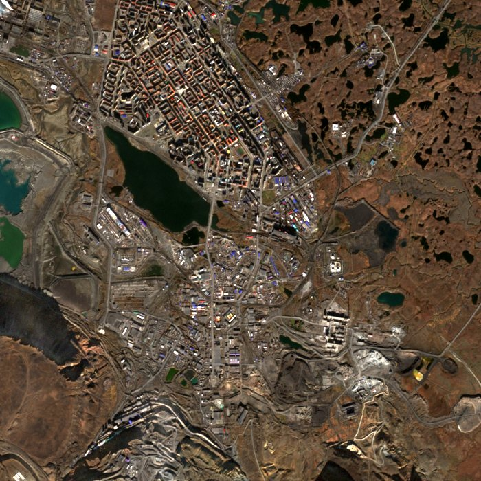
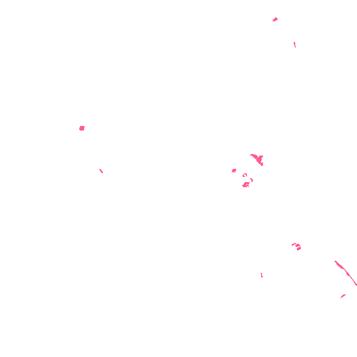

Norilsk
Russia's main source of high-grade nickel and palladium for aerospace alloys.
- Material
- Nickel
- Stage
- Mine
- Place
- Krasnoyarsk Krai, Russia
- Operator
- Nornickel
- Coordinates
- 69.33° N, 88.22° E (approximate)


Seen from orbit
- Heat
- 7 of the last 7 days and 14 of the last 30 had furnace-hot pixels within 6 km (NASA FIRMS).
- Surface temperature
- Landsat, 16 Sep 2026: typical ground 16.0 °C; 1.6 ha more than 8 °C warmer than the land around it; hottest spot 12.1 °C above it.
- Sulphur dioxide
- 0 of 1 days seen in the last 60 read above 2 DU within 50 km; highest 1.56 DU.
- Radar
- Latest Sentinel-1 radar picture: 25 Oct 2026.
Signals show activity, not output. They are measured automatically and can be affected by weather, terrain and fires.
Facts
- Arctic mining and smelting complex on giant nickel-copper-palladium deposits
- Nornickel is cited at about 20% of world nickel and 35% of palladium
- Russia mined about 210,000 t of nickel in 2024 (USGS)